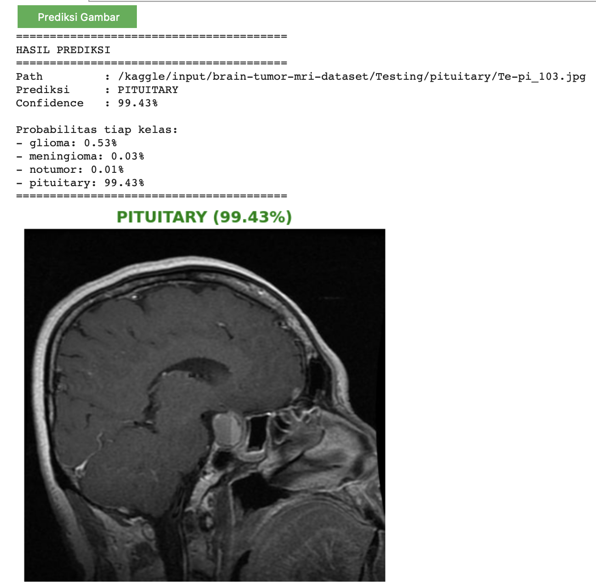
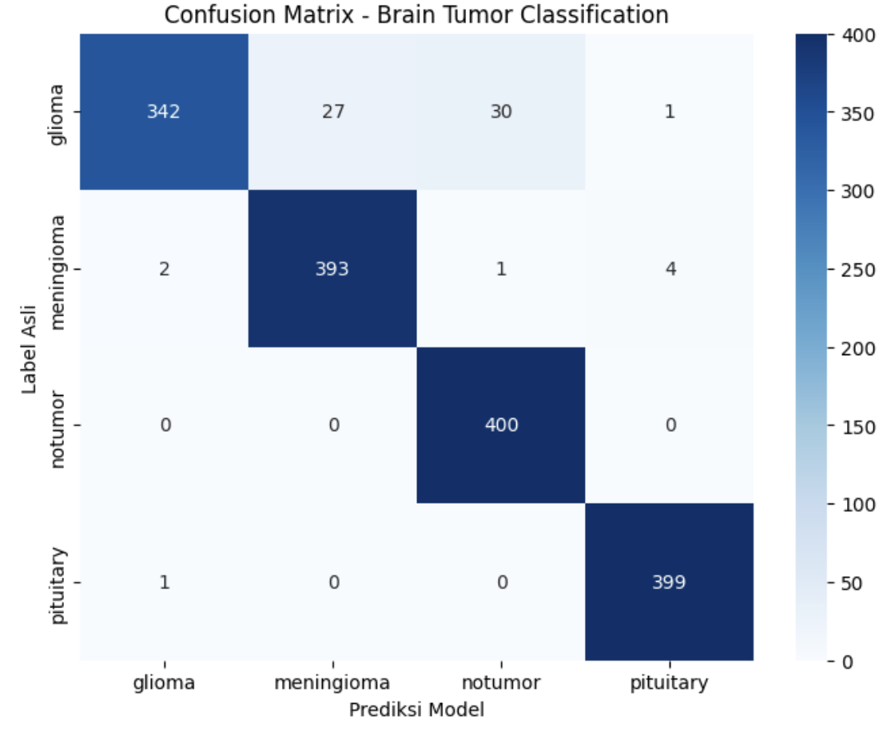

Klasifikasi Tumor Otak (MRI)
Membangun sistem diagnosa medis otomatis berbasis Deep Learning untuk mendeteksi dan mengklasifikasikan 4 jenis kondisi otak menggunakan citra MRI.

🧠 Latar Belakang Project
Tumor otak merupakan salah satu kondisi medis yang memerlukan diagnosa cepat dan akurat. Analisis citra MRI (Magnetic Resonance Imaging) secara manual oleh radiolog membutuhkan waktu dan keahlian tingkat tinggi. Project ini bertujuan untuk mengotomatisasi proses tersebut dengan bantuan kecerdasan buatan, guna memberikan opini kedua (*second opinion*) yang cepat dan andal bagi tenaga medis.
📂 Dataset & Pre-processing
Project ini menggunakan dataset publik yang terdiri dari citra MRI otak yang seimbang (*balanced*) dan terbagi ke dalam 4 kelas:
- Glioma: Tumor yang bermula dari sel glial di otak atau tulang belakang.
- Meningioma: Tumor yang muncul dari meninges (selaput yang mengelilingi otak).
- Pituitary: Tumor kelenjar hipofisis.
- No Tumor: Otak sehat tanpa indikasi tumor.
Pada fase pre-processing, semua citra di-resize menjadi 224x224 piksel dan dinormalisasi menggunakan nilai mean dan standard deviation dari ImageNet. Augmentasi data seperti Random Horizontal Flip dan Random Rotation (10 derajat) diterapkan untuk meningkatkan ketahanan (*robustness*) model tanpa merusak informasi anatomis.
⚙️ Arsitektur & Pelatihan Model
Alih-alih melatih model dari awal, saya mengimplementasikan metode Transfer Learning menggunakan arsitektur DenseNet-121.
Mengapa DenseNet? Arsitektur ini memiliki karakteristik Dense Connectivity di mana setiap layer menerima input dari semua layer sebelumnya. Ini sangat krusial untuk citra medis seperti MRI, karena model mampu mempertahankan ekstraksi fitur tekstur dan tepi yang sangat halus (fitur tingkat rendah) hingga ke layer klasifikasi akhir.
- Framework: PyTorch
- Optimizer: AdamW (sangat baik untuk model dengan parameter besar guna mencegah overfitting).
- Loss Function: Cross-Entropy Loss.
- Classifier: Layer FC (*Fully Connected*) bawaan dibuang dan diganti dengan layer linear baru dengan 4 node output.
📊 Hasil & Evaluasi
Model dievaluasi menggunakan data *testing* terpisah yang tidak pernah dilihat oleh model sebelumnya. Selain akurasi, performa divalidasi menggunakan Confusion Matrix untuk memastikan tidak ada bias atau kesalahan klasifikasi yang fatal antara kelas tumor yang visualnya mirip.

🚀 Pengembangan Lanjutan (*Next Steps*)
Untuk pengembangan ke depannya, project ini akan diintegrasikan dengan metode Explainable AI (XAI) seperti Grad-CAM, serupa dengan yang saya terapkan pada riset skripsi saya. Tujuannya agar model tidak hanya memberikan prediksi kelas, tetapi juga memvisualisasikan area spesifik (*heatmap*) pada otak yang menjadi dasar pengambilan keputusan tersebut.